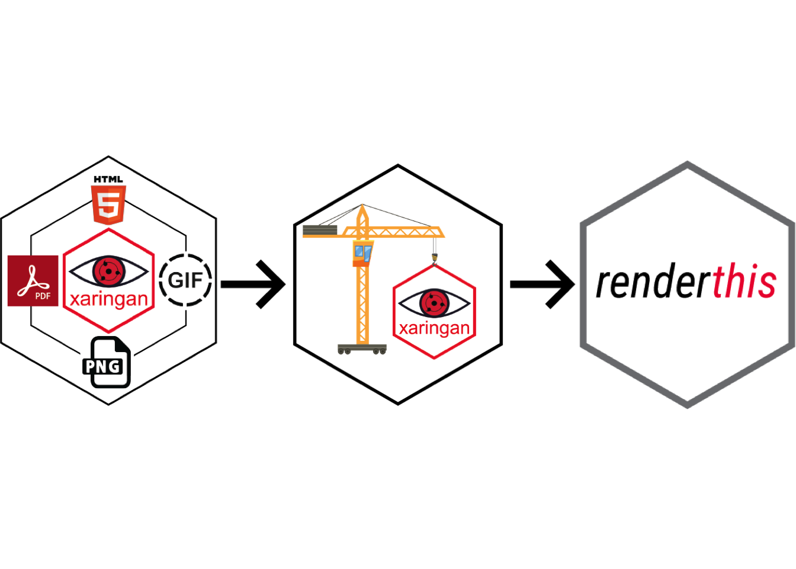

Introducing the {renderthis} package
R
package
software
A brief introduction to the {renderthis} package for rendering {xaringan} slides to different output types (previously called {xaringanBuilder})
This post introduces the {renderthis} package (originally named {xaringanBuilder}). The package contains functions for rendering xaringan slides to different formats. Rather than use this post to demo all the package features, I decided to write a brief overview of it’s primary functionality and then focus the rest of this post on the package’s development history. The image above shows the different versions of the package hex sticker, the first one being in the running for the ugliest hex sticker of all time.
What can it do?
The {renderthis} package contains functions for rendering xaringan slides (Quarto support coming!) to different formats, including html, pdf, png, gif, pptx, and mp4, as well as a ‘social’ output, a png of the first slide re-sized for sharing on social media.
The package follows the following render hierarchy:
Rmd
|
|--> social (png)
|
|--> html
|
|--> pdf
|
|--> png
|
|--> gif
|
|--> mp4
|
|--> pptxAll of the package functions follow a common pattern:
- All functions start with
to_*()to render slides to a desired format (e.g.,to_pdf()). - All functions have a required
fromargument which should be set to the full or local path to the input file. - All functions have an optional
toargument. If provided, it can be a full or local path to the output file, and it must end in an appropriate extension (e.g.slides.gifforto_gif()). If it is not provided, the output file name will be determined based on thefromargument.
While it is designed for rendering {xaringan} slides, other html slides are also supported. For example, if you have a Quarto presentation rendered as an html file, you can use any of the to_*() functions to render those slides to a pdf, png, gif, pptx, or mp4 file.
That’s the gist of what the package does, and the package documentation has many more details about the package features. Now, follow me back to 2020 where this journey began.
In the beginning, there was pagedown::chrome_print()
The {renderthis} package began in the fall of 2020 as a solution to a simple problem: converting {xaringan} slides to a pdf. I love {xaringan} slides, but the html format is clunky for sharing, especially as an email attachment, so I wanted a way to convert them to a pdf. Before making the package, my solution was to simply use pagedown::chrome_print() to “print” my rendered html file of {xaringan} slides to a pdf. For the most part, it worked just fine, and it still does! If all you need is a quick pdf of some simple slides, then pagedown::chrome_print() is probably sufficient.
But being the lazy programmer I am, I wanted a single function that rendered the html and pdf files from the Rmd source file. So I wrote a quick function I called build_pdf() that was essentially a wrapper around pagedown::chrome_print(). It checked if the input file was an Rmd file, and if so it first rendered the html and then rendered the pdf. It was a pretty simple solution, and I found it easier to remember the function build_pdf() over chrome_print(). With that function written, I decided to name the package {xaringanBuilder} as an homage to Garrick Aden-Buie’s incredible {xaringanExtra} package.
Build all the things!
With build_pdf() working, I realized that I could use the rendered pdf to convert my slides into other format types without too much more effort. For example, I wrote a build_thumbnail() function (a wrapper around pagedown::chrome_print(format = "png")) to convert the title slide of the pdf deck to a png image. This was handy for making thumbnail images for youtube recordings of my class lectures (hence the name build_thumbnail()).
But then I realized I could also render all the slides to png images, and with the help of the {magick} package I could use magick::image_join() and magick::image_animate() to compile those pngs into an animated gif of my whole presentation! This provided a handy way to share my slides, like posting them on Twitter.
Enter stage left: gadenbuie
Just a couple months after starting the package, Garrick wrote an awesome blog post on using the {chromote} package to print slides to a pdf in a way to allows incremental animations to be rendered on separate slides as well as separate slides for each panel in a panelset (the pagedown::chrome_print() solution would only render these as a single slide).
Just posted: Do you have complicated {xaringan} #rstats slides or use panelsets from {xaringanExtra}? Do you need a PDF version of your slides? I've got a little function for you:https://t.co/UXwW2KtvOw
— Garrick Aden-Buie (@grrrck) January 25, 2021
After connecting on Twitter, I quickly added Garrick as a contributor and we started working on integrating this function into {xaringanBuilder}.
Folks, at this point I need to tell you about a little-known package development secret: If you want your package to be awesome, ask Garrick to join the project.
I cannot emphasize enough just how much better this package became once Garrick started working on it. Garrick has an excellent eye for making packages user-friendly, and he is an absolute Git / GitHub wizard (read on to the bit about changing the package name to see some of this). Here are a few things he quickly added:
- He made lots of quick changes to make all the functions more robust for different use cases.
- He integrated the {cli} package to make beautiful status messages so the user can see the progress of the output being built.
- He introduced the {fs} package to simplify how file paths were being handled (which were getting rather tricky with all the different output types involved).
- He introduced multiple tests and integrated it with Github Actions so that the tests would run and the {pkgdown} site would render on every commit.
Without a doubt, Garrick’s additions transformed the package from a handful of convenient functions to a feature-packed, user-friendly tool for rendering slides.
Outside influences
At this stage, the package had already become quite a useful tool, and many users were filing issues catching little bugs here and there. The package had also grabbed the attention of several people who helped add more features. Bryan Shalloway added the initial support for rendering slides into a powerpoint deck, and Gina Reynolds’s {flipbookr} package provided some inspiration for adding support for rendering slides to mp4 videos.
Many other people added in small ways to the package over the following year. Some found bugs and posted issues, others sent pull requests with fixes. Over the summer of 2021 Garrick did an overhaul of how paths were handled in the package, after which the package remained relatively stable for about a year.
Changing the name
In the spring of 2022, Quarto started to catch fire. Alison Hill’s “We don’t talk about Quarto” post (among others) inspired me to check out Quarto presentations, which are quite similar to {xaringan} slides.
Woah, okay #rstats world I may have to just make the .Rmd -> .qmd switch…@quarto_dev is looking amazing.
— John Paul Helveston (@JohnHelveston) March 30, 2022
Exhibit A: Figures and tables in the margins! 🤯 pic.twitter.com/BDEHvxhd6e
The revelation of Quarto presentations made me realize that the {xaringanBuilder} package could actually be used to render a wider variety of inputs other than just {xaringan} slides. In fact, I myself had already used it for other purposes, such as converting the first page of a pdf paper I wrote into a png image This prompted me to consider changing the package name.
After a little back and forth, Garrick and I decided to call it {renderthis} as an homage to the phenomenal {usethis} package. We also wanted to maintain the strategy of having every function begin with the same word (previously build_*()), and we chose to_*() so that the package and function names would work together to form a kind of sentence, like renderthis::to_pdf().
Once we came up with a new name, implementing that name was daunting. I really had no idea where to begin, so I just created an entirely new repo under jhelvy/renderthis and started editing the source code accordingly. This proved to be a useful exercise as it allowed us to see how the new package would look and feel without touching the older one. In retrospect, I probably should have just opened up a new branch under the {xaringanBuilder} repo to do this, but the nice thing about working from a totally new repo is that I could also preview the documentation with full links, etc. Once we were happy with the way it looked, we actually went back to the {xaringanBuilder} repo and changed the name there.
This is where things got a little tricky. Since I already had a repo under jhelvy/renderthis, I couldn’t just change the name of jhelvy/xaringanBuilder to it. So I first changed jhelvy/renderthis to jhelvy/renderthistemp, then changed jhelvy/xaringanBuilder to jhelvy/renderthis. GitHub automagically handles redirects so that any user that navigates to https://github.com/jhelvy/xaringanBuilder gets redirected to https://github.com/jhelvy/renderthis.
Once again, shout out to Garrick for using some serious GitHub wizardry here. He was able to salvage most of my edits in the jhelvy/renderthistemp repo and merge them into the new jhelvy/renderthis repo (I still have no idea how he managed this). Garrick guided the way through the messy process of changing a package name without losing any of the commit history on GitHub. With a few more small changes to clean up the package documentation and pkgdown site, {renderthis} was ready to be introduced to the world.
Going to CRAN!
The {chromote} and {webshot2} packages (which {renderthis} depends on) were both conveniently released on CRAN in May of 2022. With these additions, we now had every dependency on CRAN, so that gave us the motivation to get {renderthis} on CRAN as well.
This too was a bit tricky given what this package does. In particular, the function examples we wrote had code that if executed would error, e.g., renderthis::to_pdf("slides.Rmd"). Even though we wrapped these in \dontrun{}, CRAN still ran these examples on the first submission. After a little more back and forth on how to address this, Garrick came up with a handy solution by making a new with_example() function which allows the examples to be run in a temp directory, which we use in each function example.
With that fix, version 0.1.0 of {renderthis} was published on CRAN 🎉!
What’s next?
One of the complaints I had early on with {xaringan} is that there was no way to print out “handouts”. I can’t stand Powerpoint, but the ability to print out a pdf with small thumbnails of each slide with space for notes was a convenient feature I used often, and to date nothing like it exists for the {xaringan} ecosystem.
For this reason, we are working on a to_handout() function that will be introduced in the next version of {renderthis}. Below is an example of a set of demo slides.

We’re also planning on supporting rendering Quarto slides, which again was one of the motivations to change the package name to a more general one.
If you made it to the end of this post, thanks for reading! And if you give {renderthis} a shot and have feedback or thoughts on it, please let us know by filing an issue.
And if you love the package and just want to let us know about that, drop us a note on the “praise” issue 😊.